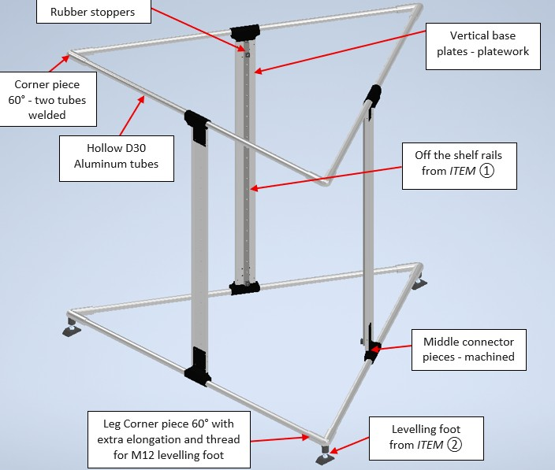
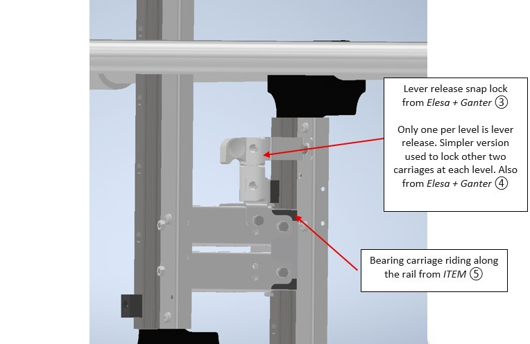
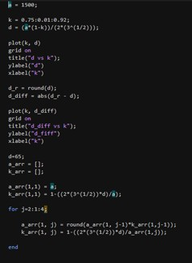

GNSS Base Station — 6 m Deployable Mast
- Type
- Self-directed design concept
- Material
- 6061 aluminium, anodised
- Tools
- Autodesk Inventor, MATLAB
- Constraints
- 6 m deployed · under 40 kg · tool-free
Brief Design concept for a portable GNSS base station mast: 6 m deployed height, under 40 kg, tool-free hand installation, protection against moisture, dust and dirt, suitable for rugged outdoor use, and packable into the bed of a pickup truck.
Approach The approach taken was to build a retractable mast with rails to compress from 6 m to 1.5 m. The design combines welded components, laser-cut platework and standard off-the-shelf parts. Taking inspiration from tripod GNSS bases.
The structure consists of 4 triangular-prism like trusses scaled down to a smaller size nested with a concentric radii. Each level contains the same elements where the bottom and top triangles are formed by hollow aluminium tubes connected by middle pieces and 60° welded corner nodes. The top and bottom triangles are connected to each other via vertical base plates screwed onto the middle pieces.
Key decisions
- Material: 6061 aluminium, anodised. The members are extruded hollow tube, which rules out 5052 (poor extrudability); 6061 extrudes, welds, threads and anodises well, satisfying all four constraints at once.
- Corner nodes: welded from two angle-cut tube stubs rather than machined from billet. The nodes must be hollow to meet the weight target, which makes billet machining impractical, and casting is not justified at this volume.
- Connections: threaded tube-to-node joints, chosen over a slip fit for positive resistance to pull-out under wind and self-weight loading.
- Environmental protection: right-sized to the requirement. The structural joints are not pressurised, so corrosion protection via a shedding cover was specified rather than a leak-tight seal.
- A MATLAB script was used to calculate the distance between the two concentric triangle sides and length of each side at every level.



- Snap door lock BMSVL, lever release — Elesa+Ganter
- Snap door lock BMS, simpler version — Elesa+Ganter
- Bearing carriage PS 4-20 — ITEM
